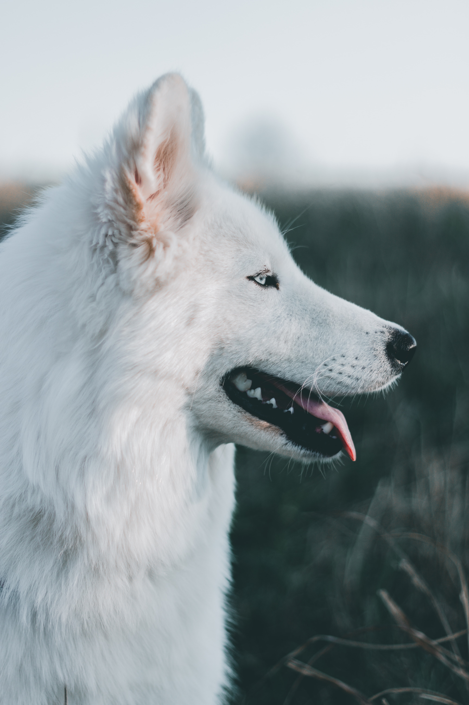
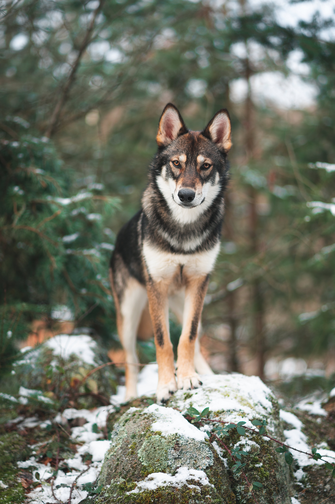
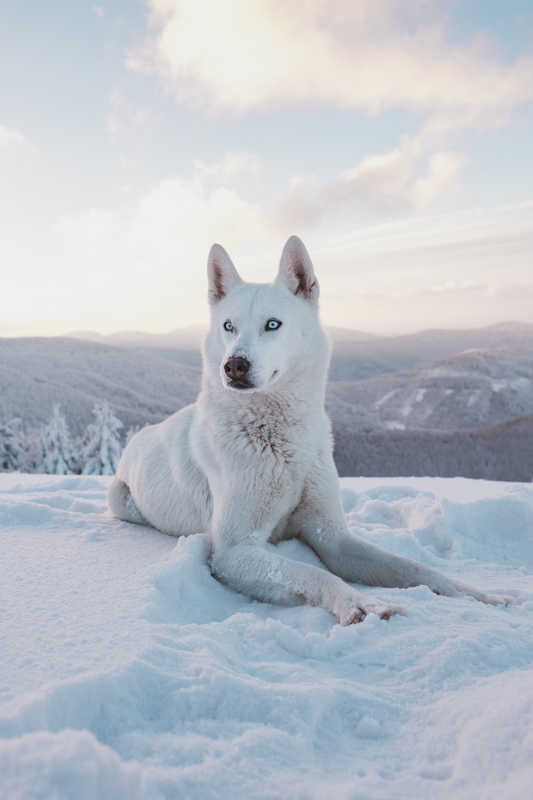

The wolf is found mostly in Asia.We can find wolfs also in snowy and mountainous areas
The  Wolf is a large canine native to Asia and North America.The Wolf is the largest member of the family Canidaehe . The banded fur of a wolf is usually mottled white, brown, gray, and black, although subspecies in the arctic region may be nearly all white .The global wild wolf population was estimated to be 300,000 in 2003 and is considered to be of Least Concern by the International Union for Conservation of Nature . Wolves have a long history of interactions with humans, having been despised and hunted in most pastoral communities because of their attacks on livestock, while conversely being respected in some agrarian and hunter-gatherer societies.It is slender and powerfully built, with a large, deeply descending rib cage, a sloping back, and a heavily muscled neck.The wolf's legs are moderately longer than those of other canids and to overcome the deep snow that covers most of its geographical range in winter.The ears are relatively small and triangular.A wolf's coat colour is determined by its guard hairs. Wolves usually have some hairs that are white, brown, gray and black.Like all land mammals that are pack hunters, the wolf feeds predominantly on wild herbivorous hoofed mammals that can be divided into large size 240–650 kg,and medium size 23–130 kg , and have a body mass similar to that of the combined mass of the pack members.In Europe, wolves eat apples, pears, figs, melons, berries and cherries. In North America, wolves eat blueberries and raspberries. Wolves also eat grass, which may provide somevitamins, but is most likely used mainly to induce vomiting to rid themselves of intestinal parasites or long guard hairs. They are known to eat the berries of mountain-ash, lily of the valley, bilberries, cowberries, European black nightshade, grain crops, and the shoots of reeds.The wolf is a social animal.In Canada, 50,000–60,000 wolves live in 80% of their historical range, making Canada an important stronghold for the species.